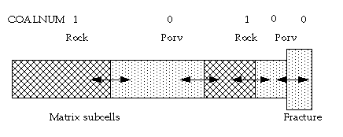

For the time-dependent method a simulation cell either contains free gas in a pore space or adsorbed gas in the rock. The rock is represented by one simulation cell and the pore volume by a connecting simulation cell. Darcy flow through a rock cell is not permitted. The usual pore volume of a cell now represents the rock volume where the imaginary micro pore space flow is accounted for by a diffusive flow equation. A cell having a non-zero coal region number as set by COALNUM hence needs to specify a “porosity” value that corresponds to a rock fraction value or using the keyword ROCKFRAC. For cells having a zero coal region number the porosity value correspond to the pore volume fraction.
If pore volume-pore volume connections exists a permeability value also need to be input in order to compute the transmissibility between the matrix subgrid cells. This is usually done by PERMX.

Using the time-dependent method the primary matrix subgrid cells are used to define both the total pore volume and the total coal volume that is partitioned. The primary matrix subgrid cells need to be defined as coal by COALNUM in order to tell that the matrix contains adsorbed gas. To redefine the matrix subgrid cells with a coal region number the keyword COALNUMR should be used.
With the time-dependent sorption model, the diffusive flow of adsorbed gas can be studied in detail using the matrix discretization option. The coal region numbers need to be the same for all connected matrix sub-grid cells. Mixing pore volume and coal volume with the option is not generally recommended as the interpretation of the resulting response from the matrix, which might include Darcy flow, needs to be carefully considered. Usually in such cases, the basic multi-porosity model should be used where the connection transmissibilities/diffusivities are controlled by the user-input sigma factors. Alternatively, the instant adsorption model can be used if appropriate. Darcy flow then controls the gas flowing towards the fractures within the pore space of the matrix.
The matrix discretization option generates sigma factors for the connections. Thus for pore-volume to pore-volume connections, the permeabilities together with the generated sigma factor are used to generate the transmissibilities in a similar way as for dual porosity. It is possible to specify permeabilities individually for the different pore systems. If unspecified, the input permeability given to the primary matrix cell is used. The transmissibility would then be constructed according to the block volume of the sub-matrix grid cell and the permeability of the sub-matrix grid cell. Note that such a transmissibility must be viewed as an internal connection within the matrix block. The transport will be diffusive through a cell connected with a non-zero coal region number.
For more information about the diffusive flow see "Coal bed methane model".
The second item of NMATOPTS specifies a fraction of either the fracture pore volume or a fraction of the matrix block volume to be used for the first primary matrix grid cell. The method is selected by the third item of NMATOPTS. With the time-dependent method, it is usually better to specify a fraction of the matrix block volume since the first matrix sub-grid cell is not necessary a pore volume cell. Similarly if all the cells in the matrix are defined as rock cells (cells with a coal region number) there is no pore volume represented in the matrix. This means that if a non-zero pore volume is assigned to the primary matrix block on input, the volume will be neglected. Warnings are issued if this is the case. It should also be noted that if the third item of NMATOPTS is put to FPORV and there is no pore volume within the matrix, the partitioning method switches to use the MBLKV method for this matrix grid cell. Warnings are issued if this is the case. Any rock volume that is assigned to cells that are not coal cells will not alter the simulation results. Using the FPORV method with NMATOPTS, the first matrix block will get a size that will match the specified pore volume under the assumption that all the matrix blocks have a pore volume. However, if only some of the sub-matrix cells have a pore volume, a normalization of the input porosity is applied to these cells in order to match the input matrix grid cells total pore volume. As an example, if only one sub-matrix grid cell is a pore volume cell, the entire matrix pore volume is assigned to this sub-matrix grid cell.